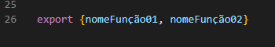
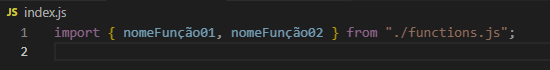
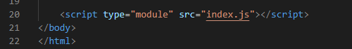

Criar as funções dentro de um arquivo .js separado
No final do .js separado, usar o escopo do 'export named': 
No arquivo desejado, usar o escopo do 'import'. OBS: Não esquecer do '.js' no final do caminho do arquivo das funções. Nesse mesmo arquivo, abaixo do import, já é possível fazer apenas a chamada das funções e elas se ativarão sozinhas. 
Na chamada HTML do arquivo onde os módulos .js foram importados, não esquecer de declarar o tipo da chamada: 
Export Default
Pouco usado. Se quiser aprender, assista a aula novamente [JS Avançado - Ultima Aula]. :)